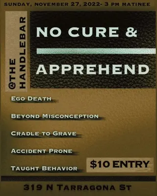
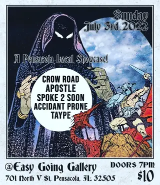
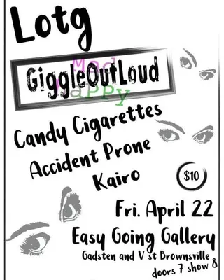
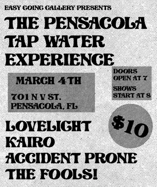
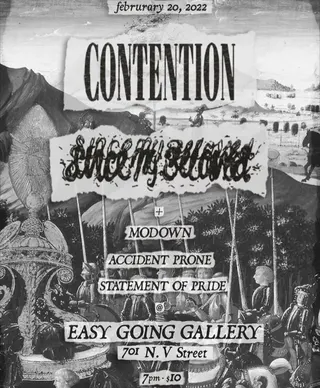

Accident Prone
pcola local5 shows on the diypensacola record since 2022
on the record since February 2022, first seen at easy going gallery on a bill with contention and since my beloved. last seen November 2022 at the handlebar; the record's been quiet since.
- first playedFeb 20, 2022 · easy going gallery
- most played ateasy going gallery ×4 shows
- biggest lineup7 acts · Nov 2022
flyer wall

Nov 27, 2022 · the handlebar
Jul 3, 2022 · easy going gallery
Apr 22, 2022 · easy going gallery
Mar 4, 2022 · easy going gallery
Feb 20, 2022 · easy going gallerypast shows
- 2022
- 27Nov 2022No Cure, Apprehend, Ego Death, Beyond Misconception, Cradle To Grave, Accident Prone, Taught Behaviorthe handlebar
- 3Jul 2022Crow Road, Spoke 2 Soon, Accident Prone, Taypeeasy going gallery
- 22Apr 2022Lotg, Giggle Out Loud, Candy Cigarette, Accident Prone, Kairoeasy going gallery
- 4Mar 2022The Pensacola Tap Water Experience, Lovelight, Kairo, Accident Prone, The Fools!easy going gallery
- 20Feb 2022Contention, Since My Beloved, Modown, Accident Prone, Statement Of Prideeasy going gallery
shared bills with
kairo ×2apprehendbeyond misconceptioncandy cigarettecontentioncradle to gravecrow roadego deathgiggle out loudlotglovelightmodown
act pages are built automatically from the show archive, so something may be off: a misspelled name, a missing link, the wrong type, or a bad local/touring call. no disrespect meant. wrong on any of that, or want a listen link (youtube or bandcamp) or live footage added? send it in.